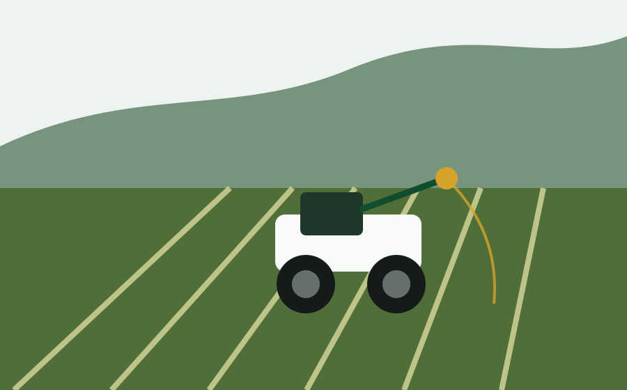
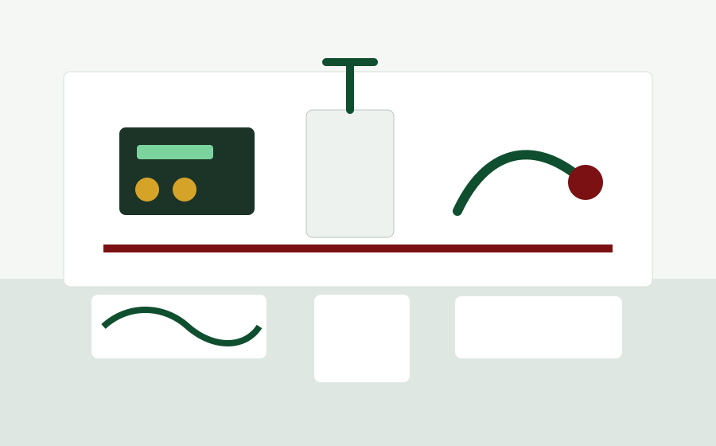
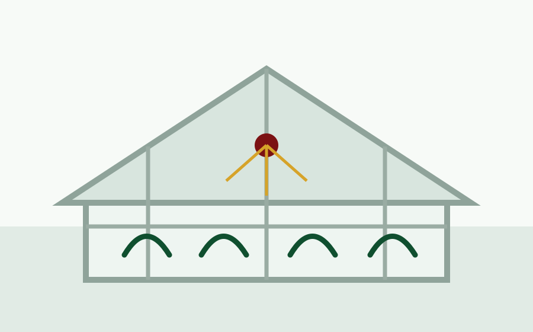

Field Robotics
Robotic arms, unmanned ground vehicles, unmanned aerial vehicles, and mechatronic implements for farm operations.
ARTS develops agricultural robotics, mechatronics, machine vision, IoT, and AI-assisted decision-support systems for smart, sustainable, and climate-resilient farming.
Based at IABE, CEAT, UPLB, ARTS serves as a mentorship and innovation platform for students, faculty, researchers, and technical personnel developing engineering solutions for agriculture.

Robotic arms, unmanned ground vehicles, unmanned aerial vehicles, and mechatronic implements for farm operations.

AI-based machine vision, crop monitoring, localization, navigation, and data workflows for agricultural diagnostics.

IoT monitoring, telemetry dashboards, machine learning, and LLM-assisted advisory tools for decision support.
The ARTS Mentorship Program guides participants through research, prototype development, documentation, publication, and technology demonstrations for smart and sustainable agriculture.
ARTS approaches AI in agriculture by asking what decision needs improvement, whether reliable local data exists, and whether AI adds measurable value under field conditions.
Models are built around locally relevant crop, sensor, weather, machinery, and field data rather than generic assumptions.
Low-cost modular edge computing lowers power demand and supports reconfigurable AI systems for mobile platforms.
Dashboards, machine learning, and AI-assisted tools translate raw readings into practical farm and greenhouse decisions.